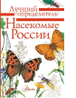

Книга пригодится всем школьникам, родителям, любителям природы, ведь наш справочник включает все самые распространённые виды насекомых, которые встречаются в российских лесах и садах, на улицах городов и в парках. - много полезной и интересной информации о насекомых; - яркие красивые и правдивые анималистические иллюстрации; - доступное изложение материала, практическое применение книги.